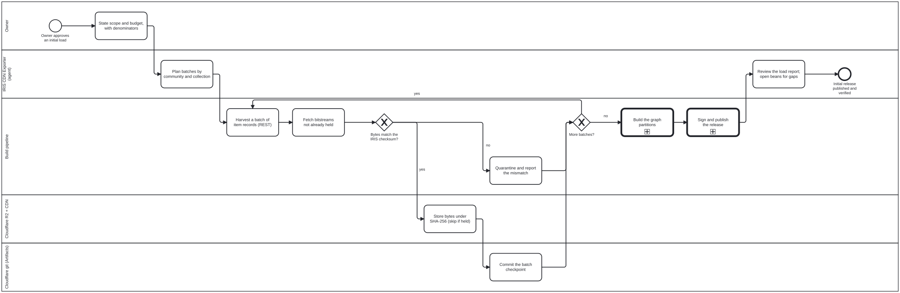
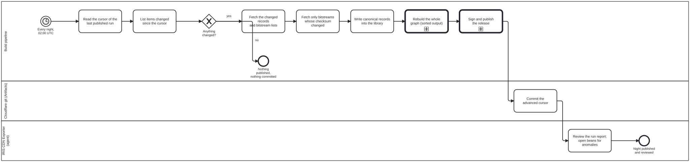
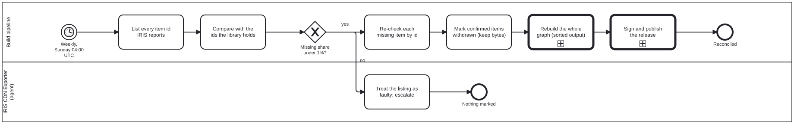
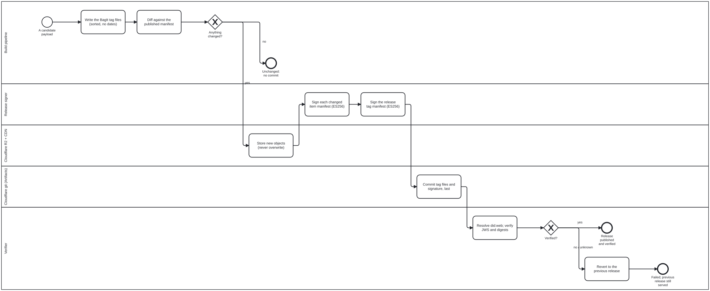

IRIS CDN Exporter: processes
How WHO IRIS gets from its DSpace server to a signed, versioned copy on Cloudflare: one initial load, then a nightly change ingest, a weekly reconciliation, and one signed release per run.
The diagrams below are rendered from the BPMN files in
processes/. The BPMN files are the source of truth, and
each step names the skill that carries it out. Where the infrastructure runs,
where it writes and where the secrets live is in
deployment; how releases and items are signed is in
iris-cdn-signing; the no-churn rule every
step obeys is in iris-cdn-exporter.
Actors
| Lane | Who or what |
|---|---|
| Owner | Approves scope, budget and the storage target |
| IRIS CDN Exporter (agent) | Plans and reviews, and opens beans for anomalies. Never holds the key, and never pushes to a WHO repository |
| Build pipeline | The scripts in scripts/iris-cdn/, run by GitHub Actions. Same input, same bytes |
| Release signer | Holds the P-256 private key and signs what changed |
| Cloudflare git (Artifacts) | A git repository on Cloudflare holding the release history: BagIt tag files, the release signature, and state files (cursor, checkpoint) |
| Cloudflare R2 + CDN | Every byte named by its SHA-256 and served with an immutable cache. Also serves did.json |
| Verifier | Anyone. Resolves the key from the DID document, never from the package |
1. Initial load
processes/iris-cdn-initial-load.bpmn. The load covers metadata and the PDFs.
It refuses to start without a budget stating the upstream totals and a request
rate (run.ts initial-load --budget <json-or-file>). It runs in batches of one
page of one collection (100 items by default) and checkpoints after every
batch in state/initial-load.json, so a stopped load resumes where it left
off. Bytes that fail the IRIS checksum are quarantined, not published.

2. Nightly change ingest
processes/iris-cdn-nightly.bpmn. The pipeline lists the items IRIS changed
since the cursor, using the DSpace REST API only, fetches only those, and
rebuilds the graph in full. If nothing changed, it publishes nothing and makes
no commit. The cursor moves forward only after the release verifies.

3. Weekly reconciliation
processes/iris-cdn-reconcile.bpmn. REST does not report deletions, so once a
week every item ID is compared with what the library holds. If more than 1% of
held items are missing, the listing is treated as faulty and nothing is marked.
Withdrawn items are marked as withdrawn and their bytes stay addressable.

4. Sign and publish (called by all three)
processes/iris-cdn-sign-publish.bpmn. Each changed library item gets a
detached JWS over its own manifest, and the release is a BagIt bag whose
signed tag manifest pins every item manifest and signature (see
iris-cdn-signing). Payload objects go to R2
first. The tag files and the signature are committed to Cloudflare git last,
in one commit. A release that does not verify must be reverted so the
previous release stays served: run.ts verify reverts the commit in its
checkout, but in the workflow that revert is not pushed, so for now it is a
manual git revert in the release repository.

The signing key already exists and is published outside these processes; see key custody.
When metadata changes and the PDF does not
A record and its files are stored and diffed separately. A Dublin Core edit
produces a new record, and therefore a new digest, while the PDF keeps its
digest and is not fetched again. Renamed communities and collections are
caught by re-reading them nightly. Edits that do not move lastModified are
caught by the weekly metadata hash check. See the skill iris-rest-feed.
Skills and code
| Skill | What it covers |
|---|---|
iris-cdn-exporter |
The agent role and the no-churn rule |
iris-rest-feed |
The DSpace REST change walk, the weekly reconciliation, fixity, the live endpoint shapes |
iris-cdn-signing |
BagIt, the detached JWS, did:web, key rotation |
iris-oxigraph |
The graph partitions the rebuild produces |
iris-dspace |
What an IRIS record holds |
The code is in scripts/iris-cdn/: run.ts (the runner, with modes
initial-load, nightly, reconcile, verify and revert), bag.ts,
signing.ts and rest-feed.ts. Its tests are scripts/tests/iris-cdn.test.ts.
The platform processes these call are in cat-harness:
processes/kg/nquads-distribution.bpmn (graph partitions),
processes/kg/named-query-execution.bpmn (prepared SPARQL) and
processes/kg/kg-to-portal.bpmn (the general select, package, sign,
distribute and verify pattern).